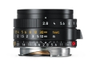
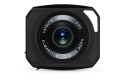

器材库 > 35mm画幅MF定焦镜头 > Elmarit-M 28/2.8 ASPH.

详细规格
镜头类型
广角镜头
发布日期
2016-01-14
焦距
28mm
最大光圈
f/2.8
最小光圈
f/22
视角（对角）
75°
视角（水平）
65°
视角（垂直）
46°
镜头结构
8片/6组
非球面镜片
1片
光圈叶片
10片
最近对焦距离
70cm
滤镜口径
39mm
镜头卡口
Leica M
防抖
否
颜色
黑色
尺寸
约52×30.7mm
重量
约175g
附件
遮光罩
arondes2016-11-27 01:024.58 分
操作性 4.00耐用性 4.50性价比 4.50解像力 5.00色彩还原 5.00机械结构 4.50
散客2016-11-22 12:164.83 分
操作性 5.00耐用性 5.00性价比 4.50解像力 5.00色彩还原 5.00机械结构 4.50
BG9CNE2016-03-28 10:324.67 分
操作性 5.00耐用性 5.00性价比 5.00解像力 4.50色彩还原 4.50机械结构 4.00
产品图 / 样片
Elmarit-M 28/2.8 ASPH.

Elmarit-M 28/2.8 ASPH.